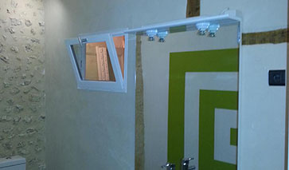
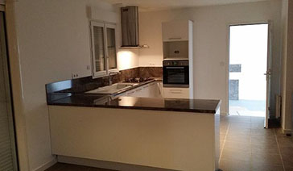

A propos....
 |
Une approche personnaliséOn personnalise, on adapte tout selon votre idée et discutons et déterminons ensemble les possibilités de votre projet. "on peut tout faire, rien n'est impossible, tout est question de goût !" |
Qualité, Simplicité & EconomieNous sommes très rigoureux sur la qualité et l'aspect de notre travail. Nous avons un choix très diversifié de matériaux, de qualité tout en restant économique, pour de beau résultat à des tarifs toujours plus intérréssant. |
 |
DisponibilitéOn trouve toujours un moment pour vous dépanner, un coup de fil et on se donne rendez-vous. |